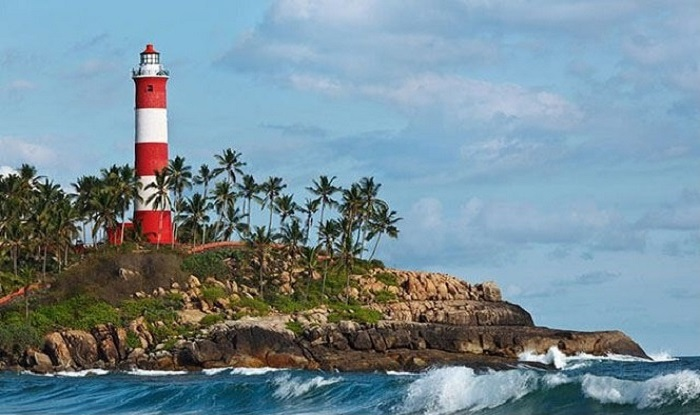

Vembanad Lake
Vembanad Lake is the second largest lake of Kerala. It is also a major site of tourist attraction in Alleppey and has a number of resorts on its banks. Lying in the heart of Kerala backwaters, the lake is famous for its scenic beauty.

Alappey Light House
The Alappuzha Lighthouse, once a marker of the busiest ports and trade centres of Kerala, is now an important historical monument in Alleppey. One can go to the top and enjoy the great greenscapes of the entire Alleppey town.
St. Andrew's Basilica Arthunkal
The St. Andrew's Basilica Arthunkal is one of the most popular Alappuzha tourist places. Established in the 16th century , the St. Andrew’s Basilica Arthunkal is something that you shouldn’t leave out of your itinerary.